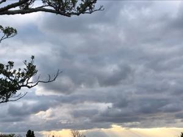

うるがいの話 ある日
最新: 作家東野圭吾【うるがいの話 ある日】とは 一日だけのプログです
『うるがいの話』の最新一日だけのプログで、通信料が少なく経済的だ。カニの画像をクリックすると全ての日付が載る『うるがいの話』サイトを表示します
|
|
【うるがいの話】 うるがい(ｳﾙｶﾞｲ urugai)とは、『もずくがに』の名前でとても大きくなります。 |
|---|---|
|
|
【カミマヤーの話】 猫のことを方言でマヤーといいます。カミマヤー（kamimayaa）とは、神の猫のことです。 |
|
【たながぁの音楽】 たながぁ（ﾀﾅｶﾞｰ tanagaa）とは手長えびのことで、何種類かあり大きいのは車 エビぐらいになります。 |

|
【ぶながぁの話】 ぶながぁ(ﾌﾞﾅｶﾞｰ bunagaa)とは、赤い髪の毛、赤い身体、そして身長は１ｍ２０ｃｍ ぐらい、川の蟹を食べているの目撃された。場所は沖縄県国頭郡大宜味村のと ある村僕の隣近所に住んでいる爺さんから、聞いた話です。 |
|
|
【ギーマの話】 ギーマ(giima)とは、山原の里山に咲くスズランに似た、 花を付けます。実は食べられます、 気が付くと口の周りが紫になっています。 |
2023年01月30日 (月）作家東野圭吾
16:06

『あの頃ぼくらはアホでした』著東野圭吾を読む、著者の紹介をみると阪大の
電気工学科卒、歳は少し上であるがほぼ同世代であること、浪人し入った大学
の学科が一緒であること、体育系の部活をしていた、総じて学生時代はアホだ
ったことから、自分の日記（あるとヤバイので昔に廃棄した）を読むようだっ
た。この前、大学入試のサクラサクの値段は、いくらだったかなと思いだせな
かったが、著者の場合、サクラチル（慶応大学）だったが５百円と載っていた
。作家は記憶力は凄い！、常々思うである。
早いもので明日で、一月が終わってしまう。まだ今月はバイクに乗っていない
とりあえず明日の天気は良さそうだが・・・、と師匠から教えてもらったユー
チューブの占星術『あぶすら星ちゃんねる』をみると、
【要注意の日】
★31日、車等の運転には注意
アクシデントの可能性が高い日
とある、明日まで寒く、２月からは暖かくなるので繰り延べすることにする。
ところで動画で木星が出てきた。なかなか、読書完了にならない『夜空はなぜ
暗い？』の中で
ハレーは１６９４年のイオ（木星の衛星）の食に関する新しいデータを再検討
し、光は１天文単位(太陽と地球間の距離)を８分３０秒で進むという結論に達
した。この数字は今日の値よりわずか１０秒多いにすぎなかった。
これって３百年も前の人の話である！。
１６時００分 ビットコインの総資産 ￥８、９０７（↑２７１）